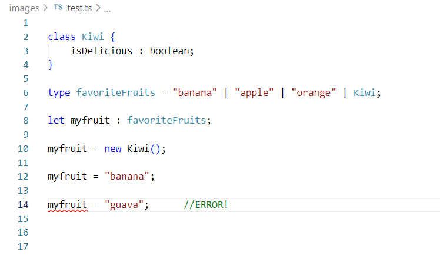
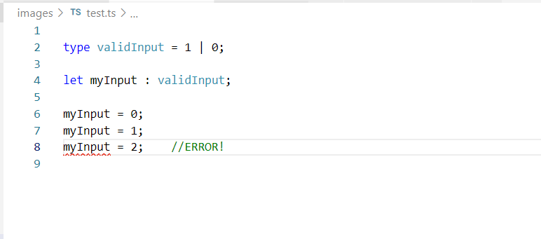
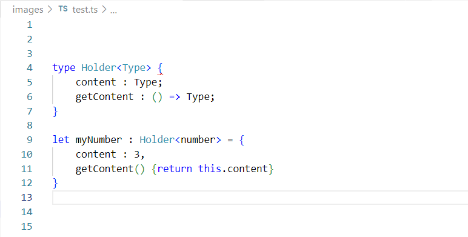
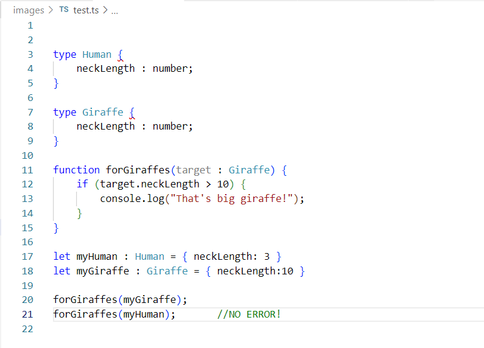
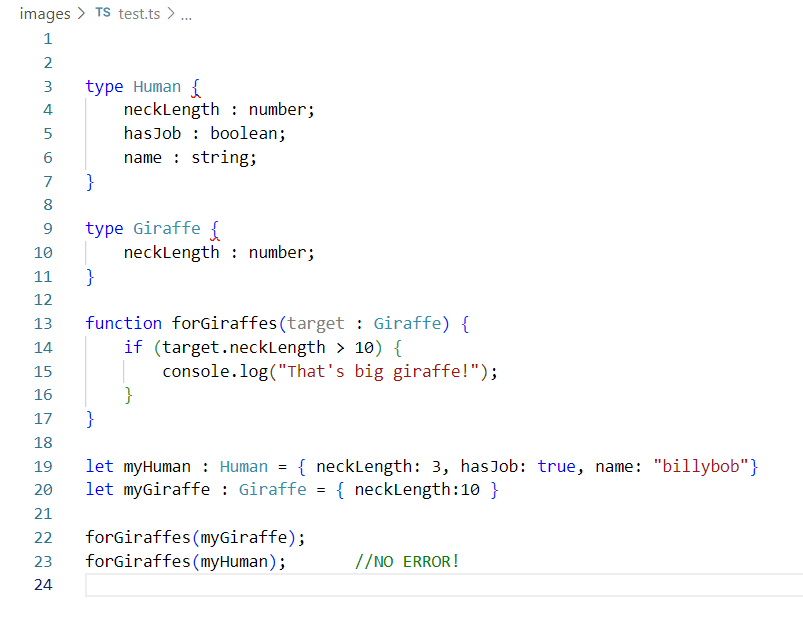

Unions
Unions provide more flexibility in declaring new types.
Instead of adding code to try to fully handle the case of one or
more types, an additional type can be defined to be one of the
desired types.

It can also be used to ensure that a variable
contains one of a limited number of valid inputs.

Generics
Generics provide a way to implement variables
consistently within types, when the type of variable is not
known at compilation time.

Type System and Type Shapes
Typescript uses a structural rather than a nominal type system.
This means that the compiler determines type relationships based
on the properties of an object, and not a type label. In fact,
types are not present in any way at runtime, they are only used
during compilation. As a result, objects that contain the same
properties as a certain type, but that are never defined to be of
that type, can still be treated as such.

Another surprising implication is that the shape of an object
only requires a subset of the properties to match.
